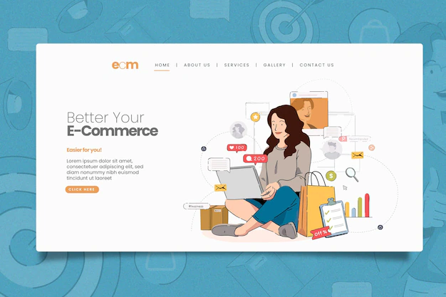
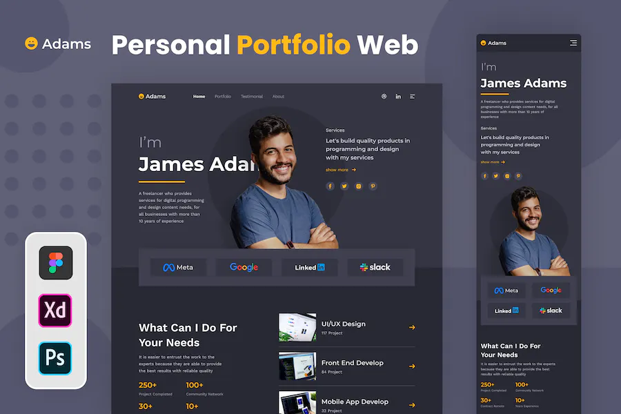
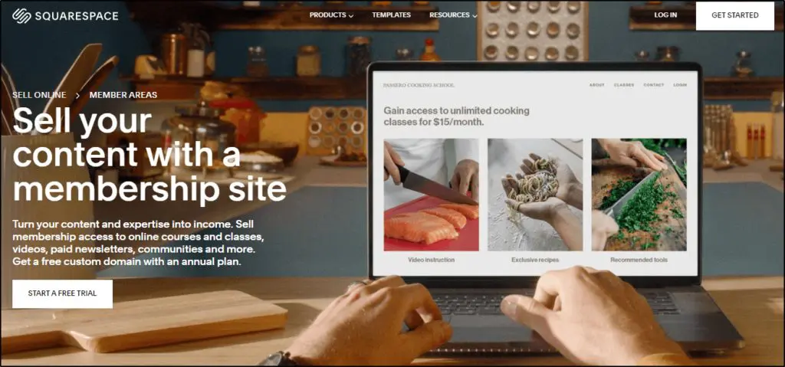
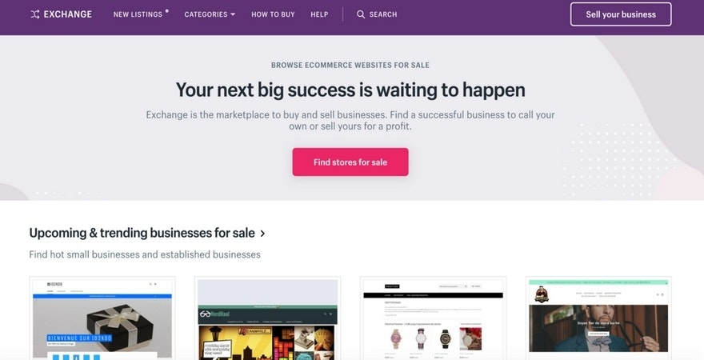
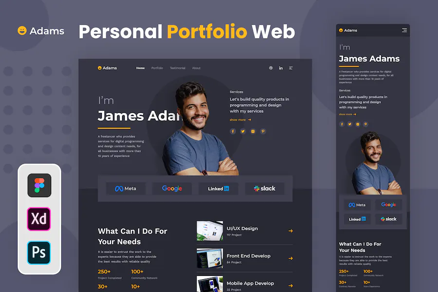
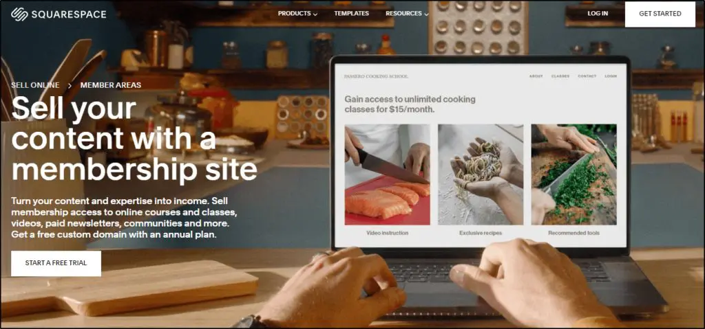
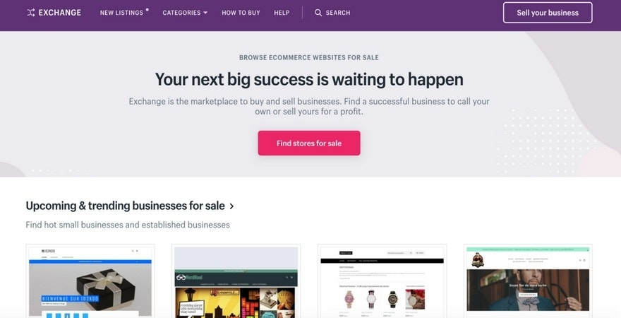

Starting an online store is one of the most popular ways to make money. An eCommerce store provides a space to sell your own products on an online platform.
Fortunately, eCommerce solutions like Hostinger Website Builder and Shopify make building an online store website easy.
An eCommerce website builder provides all the tools to ensure optimal customer experience and conversion rates. It’s ideal for aspiring entrepreneurs with limited technical skills.
Don’t forget to carefully consider which products to sell and create a proper strategy to market your business.
If you’re interested in creating online shops, keep these tips in mind:
- Find a specific niche. It’s easier to sell and market products within the same niche. Doing so will also open more upselling opportunities.
- Research eCommerce platforms. Each website builder has specific features, business tools, and payment gateways for different needs.
- Embrace online marketing. Explore various eCommerce marketing strategies, such as through email and social media.
2. BLOG
Blogs are excellent for building your brand. It is a great website idea for self-expression and getting an additional income stream. It’s also one of the most suitable website ideas for beginners.
You can monetize your blog with ads, sponsored posts, or a paid subscription system.
Another way to make money blogging is through affiliate marketing. Affiliate marketing is a business model where the affiliate earns profit by promoting a merchant’s products or services. This involves creating targeted content to drive traffic to affiliate links.
The amount of money you generate from affiliate marketing will depend on the number of purchases and traffic tracked from your website.
Some popular affiliate programs include Fiverr Affiliates, NordVPN Affiliate Program, and eBay Partner Network. Meanwhile, affiliate networks like ShareASale, CJ Affiliate, and FlexOffers connect independent affiliates with companies.
The affiliate website process is similar to starting any other blog. Begin by publishing blog posts about the targeted products and services and ensure the affiliate links are accessible.
Create a blogging schedule. Consistently publish blog posts to build an audience base.
- Apply SEO best practices. Getting your site to rank high on search engine results pages (SERPs) can improve your brand exposure and sales.
- Research affiliate marketing programs. Consider the niches, commission rates, and availability. Some affiliate programs and networks charge membership fees and implement a minimum sales goal, which is not ideal for beginners.
- Stick to a specific affiliate marketing niche. If you choose to become an affiliate marketer, promote topics and products that interest your particular audience base.
3. Portfolio Website
Compiling visual work takes time and effort. A portfolio website project can solve this issue and open you up to more job opportunities. It’s one of the most simple website ideas to execute.
Fortunately, a portfolio website’s design and content are easy to modify. Various website builders offer the required tools to create an online portfolio at an affordable price. WordPress also provides a selection of page builder plugins and portfolio themes to streamline your work.
If you are just starting out, start your portfolio creation journey with Hostinger’s free website hosting and upgrade in the future.

Here are a few tips to make a portfolio website that leaves a lasting impression:
- Brainstorm website ideas. Browse through inspiring web portfolios, such as Slava Kirilenko’s and Cyd Stumpel’s.
- Use your name for the site’s domain name. This helps increase your brand exposure and memorability. If you’re having trouble with domain availability, check out our domain name checker.
- Provide a contact form. Let people reach you easily. Display social media icons and a business email address on your portfolio site.
4. Membership Website
Membership websites make money by restricting access to exclusive content, like higher-quality posts, discount codes, and video tutorials. This website type can be a marketing strategy that helps improve brand value.
WordPress membership plugins can help you create a membership website without technical knowledge. Some of the most popular options are Paid Memberships Pro and Restrict Content.

When looking for the best membership plugin for your own website, remember to:
- Pick the plugin best suited to your needs and budget. While premium membership plugins provide more features and better tools, the free ones offer lower-risk investments to help you get started.
- Research the supported payment options. Make sure members can easily make transactions on your website. Smoother transactions lead to more subscriptions.
- Consider inclusions. Pick a membership plugin that offers content-dripping features, reliable support, and integrations with popular tools.
5. Dropshipping Website
Dropshipping is a great website idea for people who want to run an online store without dealing with inventory management and shipping. All you have to do is create a website and promote the products. Your dropshipping partner will take care of inventory and shipping.
Moreover, a dropshipping page requires low initial investments. It’s easier to start with and offers flexibility in operating your business.
If you’re interested, consider building a dropshipping website on WordPress CMS with WooCommerce. This open-source eCommerce plugin is highly scalable, offering plenty of free and paid extensions to extend your website’s functionality.

Before starting a dropshipping business, take a look at these tips:
- Collaborate with reliable dropshipping partners. Your partner’s work ethic will reflect on your brand and customer satisfaction.
Collaborate with reliable dropshipping partners. Your partner’s work ethic will reflect on your brand and customer satisfaction.
Author: Bhavesh
While the design and technical aspects of my first website may not be perfect, it represents a significant milestone in my journey as a web developer. This project embodies my unwavering inspiration and dedication towards pursuing my passion and serves as a testament to my commitment towards continued growth and improvement in this field.

Don’t forget to carefully consider which products to sell and create a proper strategy to market your business. If you’re interested in creating online shops, keep these tips in mind:
- Find a specific niche. It’s easier to sell and market products within the same niche. Doing so will also open more upselling opportunities.
- Research eCommerce platforms. Each website builder has specific features, business tools, and payment gateways for different needs.
- Embrace online marketing. Explore various eCommerce marketing strategies, such as through email and social media.
You can monetize your blog with ads, sponsored posts, or a paid subscription system.
Another way to make money blogging is through affiliate marketing. Affiliate marketing is a business model where the affiliate earns profit by promoting a merchant’s products or services. This involves creating targeted content to drive traffic to affiliate links.
The amount of money you generate from affiliate marketing will depend on the number of purchases and traffic tracked from your website.
Some popular affiliate programs include Fiverr Affiliates, NordVPN Affiliate Program, and eBay Partner Network. Meanwhile, affiliate networks like ShareASale, CJ Affiliate, and FlexOffers connect independent affiliates with companies.
The affiliate website process is similar to starting any other blog. Begin by publishing blog posts about the targeted products and services and ensure the affiliate links are accessible.
- Apply SEO best practices. Getting your site to rank high on search engine results pages (SERPs) can improve your brand exposure and sales.
- Research affiliate marketing programs. Consider the niches, commission rates, and availability. Some affiliate programs and networks charge membership fees and implement a minimum sales goal, which is not ideal for beginners.
- Stick to a specific affiliate marketing niche. If you choose to become an affiliate marketer, promote topics and products that interest your particular audience base.
Create a blogging schedule. Consistently publish blog posts to build an audience base.
Fortunately, a portfolio website’s design and content are easy to modify. Various website builders offer the required tools to create an online portfolio at an affordable price. WordPress also provides a selection of page builder plugins and portfolio themes to streamline your work.
If you are just starting out, start your portfolio creation journey with Hostinger’s free website hosting and upgrade in the future.

Here are a few tips to make a portfolio website that leaves a lasting impression:
- Brainstorm website ideas. Browse through inspiring web portfolios, such as Slava Kirilenko’s and Cyd Stumpel’s.
- Use your name for the site’s domain name. This helps increase your brand exposure and memorability. If you’re having trouble with domain availability, check out our domain name checker.
- Provide a contact form. Let people reach you easily. Display social media icons and a business email address on your portfolio site.

When looking for the best membership plugin for your own website, remember to:
- Pick the plugin best suited to your needs and budget. While premium membership plugins provide more features and better tools, the free ones offer lower-risk investments to help you get started.
- Research the supported payment options. Make sure members can easily make transactions on your website. Smoother transactions lead to more subscriptions.
- Consider inclusions. Pick a membership plugin that offers content-dripping features, reliable support, and integrations with popular tools.
Moreover, a dropshipping page requires low initial investments. It’s easier to start with and offers flexibility in operating your business.
If you’re interested, consider building a dropshipping website on WordPress CMS with WooCommerce. This open-source eCommerce plugin is highly scalable, offering plenty of free and paid extensions to extend your website’s functionality.

Before starting a dropshipping business, take a look at these tips:
- Collaborate with reliable dropshipping partners. Your partner’s work ethic will reflect on your brand and customer satisfaction.
Collaborate with reliable dropshipping partners. Your partner’s work ethic will reflect on your brand and customer satisfaction.